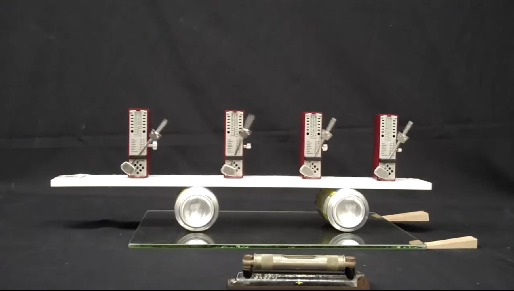

### 蔵本モデルによる同期現象 #### 〜拍手のリズムはなぜ揃うのか？〜 --- ### 自己紹介 <div class="profile-container"> <div class="profile-left"> * さめ(мег-сск) * 🧑💻 フリーランスのソフトウェアエンジニア * 🧑🎓 社会人学生として通信制大学在学中 * 得意分野: * 📸 コンピュータビジョン (画像認識/点群処理) * 🌍 空間情報処理 (地理情報/リモートセンシング) * ☁️ クラウドインフラ設計/IaC (AWS, GCP) * [GitHub](https://github.com/s-sasaki-earthsea-wizard) * [YouTube](https://www.youtube.com/@SyotaSasaki-EW) * [Speaker Deck](https://speakerdeck.com/syotasasaki593876) </div> <div class="profile-right"> <img src="assets/images/icon_circle.png" alt="avatar" height="350px" width="350px"> </div> </div> --- ### 今日話すこと <div class="simple-box"> * 「同期現象 (バラバラだったリズムが揃う現象)」をモデル化できる蔵本モデルについて話します！ * 蔵本モデルの数式の意味を噛み砕いて説明します * 「ホタルの点滅」を再現した蔵本モデルのシミュレーションを見てみましょう * 蔵本予想についても簡単に説明します </div> --- ## 蔵本モデルの概要 --- ### 蔵本モデルとは？ <div class="simple-box"> * 蔵本モデルとは、同期現象をモデル化するための数理モデル * メトロノームのリズムが揃っていく動画を見ましょう！ </div>  --- ### 蔵本モデルの応用例 <div class="simple-box"> * 「リズムが揃う現象」をモデル化できる！ * 👏拍手のリズム * ホタルの発光リズム * 電力系統 (発電機の周波数が乱れると大停電になる！) * 心臓の鼓動のリズム (これの乱れが心房細動) </div> --- ### 蔵本モデルの数式 $$ \frac{d\theta_i}{dt} = \omega_i + \frac{K}{N} \sum_{j=1}^N \sin(\theta_j - \theta_i) $$ <div class="simple-box"> * $\theta_i$ は $i$ 番目の振動子の位相 * $\omega_i$ は $i$ 番目の振動子の角速度 * $K$ は相互作用の強さ * $N$ は振動子の数 </div> --- ### 蔵本モデルの右辺第2項の意味 $$ \frac{K}{N} \sum_{j=1}^N \sin(\theta_j - \theta_i) $$ <div class="simple-box"> * $\theta_i$を自分の拍手のリズム、$\theta_j$を他の人の拍手のリズムだと思おう * この式は、自分とみんなのリズムのズレの平均を表している * 結合定数 $K$ が大きいほど、リズムが揃いやすくなる </div> --- ### 結合係数 $K$ の意味 <div class="simple-box"> * 結合係数 $K$ が大きいほど、リズムが揃いやすくなる * $K$ が小さいとリズムは揃わない * 拍手の例で例えれば、「どれだけ他の人の拍手のリズムを意識して合わせようとするか」という意識を数値化したもの * $K=0$ の場合は、相手の拍手のリズムをまったく意識せず自分のリズムを維持しようとする、ということ * この後、シミュレーションで実例を見よう！ </div> --- ### 蔵元モデルの式をもう一度見る $$ \frac{d\theta_i}{dt} = \omega_i + \frac{K}{N} \sum_{j=1}^N \sin(\theta_j - \theta_i) $$ <div class="simple-box"> * 「自分のリズムの変化率」は「他の人とのリズムのズレの平均」と結合係数 $K$ によって決まる * 結合係数 $K = 0 $ の時は右辺第2項が消え、自分のリズムの速さ$\omega_i$を維持する * 結合係数 $K$ が大きいほど、他の人とのリズムのズレが自分のリズムの変化率に影響する </div> --- ## 蔵本モデルのシミュレーション --- ### 蔵本モデルのシミュレーション <div class="simple-box"> * GitHubに蔵本モデルのシミュレーションのコードを公開してくれている方がいたので、その方のコードをいじって遊んでみました！ * https://github.com/fabridamicelli/kuramoto * このコードを使って、ホタルの点滅のリズムが揃う様子を見てみましょう！ </div> --- ### ホタルの点滅: $K=3.25$ --- ### LT登壇者の募集 <div class="simple-box"> * 物理学集会ではLT登壇者を募集しています！ * どんなジャンルでもOK！ * 応募がないと主催がまたLTという名目のジャイアンリサイタルを開くことになります... * 興味のある方は物理学集会のDiscordサーバーまで！ </div> --- ### 告知 <div class="simple-box"> * 次回開催は5月31日を予定しています * LTだけでなく、YouTubeの物理の動画を「この動画をみんなで見たい！」という提案も大歓迎です！ </div>